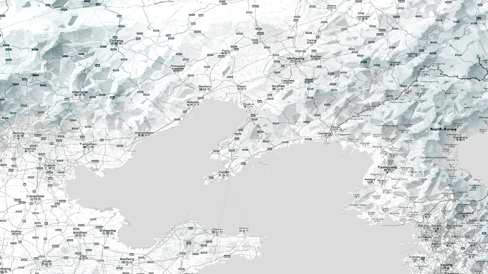
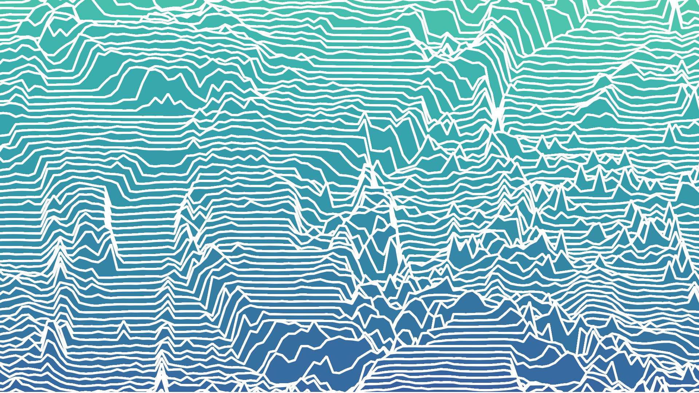
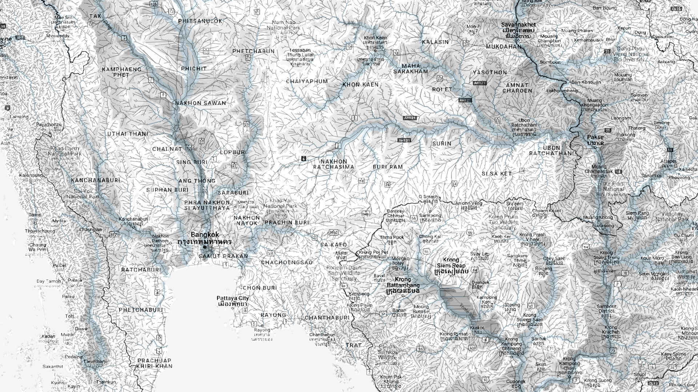

Steve Kim is a writer/coder working in technical and science communication.
스티브 김은 기술 및 과학 커뮤니케이션 분야에서 일하는 작가이자 코더입니다.






WEB DEVELOPMENT
• World Factbook Scraper: An endless feed of random facts for geography lovers
• ASEAN Primer: Economic indicators of ASEAN countries, neatly formatted
• U.S. State Ranker: How they stack up in random census categories
DATA SCIENCE
• GIS From Command Line: How to turn Linux into a complete Geographic Information System from command line
• PostGIS Cookbook: Recipes for working with geospatial data in PostgreSQL and PostGIS
• QGIS Expressions: Create and style geometries on-the-fly with these QGIS expressions
• American Geography: Wrangling US Census data from database to the web
SOFTWARE
• Web: HTML/CSS/JS, Leaflet, MapLibre
• Data: R, SQL, BASH
• GIS: QGIS, GRASS GIS, PostGIS
• Image: Inkscape, GIMP, ImageMagick